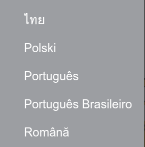
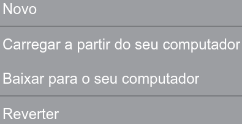
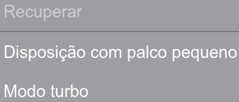

Capítulo 2: Tela Princicpal
O objeivo deste capitulo é apresetar a Tela Principal do Scrath, seus Menus e as Áreas de Edição e Criação. Após a letura você irá:
Conhecer todos as os Menus da Barra de Tarefas, saber mudar idioma, receber dicas, criar, abrir e salvar projetos.
Conhecer a Área de Seleção e Criação. Aqui estarão todos os elementos da animação para o Ator e para o Palco.
Conehcer as Abas de Ações. Ela é composta de três abas, uma para os roteios e scripts, outra para as fantasias e a ultima para os sons.
Conhecer a Área de edição e conexão de script. Aprenderemos sobre os blocos de comandos e como criar nossos códigos para animação.
Conhecer o Simulador da Animação onde se pode ver o resultado da execução dos comandos.
Quer conhecer mais sobre o Scratch?
Caso você esteja curioso, pode buscar mais informações no site. Clicando no nome Scratch na Barra de Ferramentas você será redrecionado para site.
No site você pode ver projetos que outras pessoas fizeram, e publicar o seu próprio projeto.
Experimente você também, océu é o limite...
Com dificuldade porquê está tudo em iglês?
É simples, mude o idioma para Portugês. Ao clicar no globo você pode mudar o idioma do programa, para inglês, francês, português, etc...
Este é um exemplo de alguns idiomas. Caso o seu não esteja em português, você pode mudar clicando no globo e descendo na lista
Interessado nos projetos do Scratch?
Caso queira criar um projeto novo ou abrir um já existente, você pode utilizar ese menu para isso. Ele serve ainda para salvar o seu projeto.
Quando clicar em arquivo aparacerão as opções na imagem abaixo.
Editar é o poder...
Caso queira desfazer alguma ação, diminuir a área do palco ou mesmo turbinar a animação esse menu irá lhe dar poder isso.
Quando clicar em editar aparacerão as opções na imagem abaixo.
Quer algumas dicas sobre o Scratch?
Caso você precise de ajuda, pode buscar mais informações clicando no Menu Dicas na Barra de Ferramentas, então você verá várias delas.
Você também pode tirar dúvidas conosco, entre em contato sempre que desejar.
Nossos contatos estão no final da página, no rodapé.
Quer mais detalhes sobre o Scratch?
Caso você queira saber quem desenvolveu o Scratch entre outras coisas, pode buscar descobrir clicando no Menu Sobre na Barra de Ferramentas.
Você irá para a página oficial do scratch na internet, mostrando os créditos e informações mais específicas da ferramenta.
Quer saber quem criou essa apostila, veja no rodapé da página.
Duplicar: O primeiro icone duplica o objeto selecionado.
Apagar: O segundo icone apaga o objeto selecionado.
Crescer Objeto: O terciro icone aumentar o tamanho do objeto selecionado. OBS: para fazer, deve-se clicar no ícone, depois clica no objeto desejado.
Encolher Objeto: O quarto icone diminui o tamanho do objeto selecionado. OBS: para fazer, deve-se clicar no ícone, depois clica no objeto desejado.
Ajuda: O quinto icone procura ajuda nos documentos da ferramenta ou na pagina.